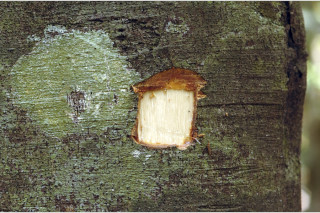
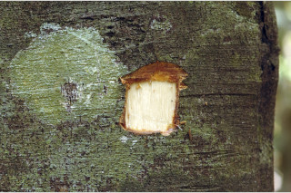
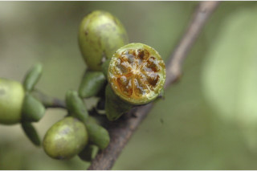
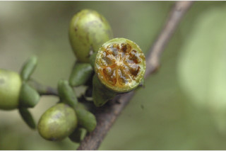

Trees up to 35 m tall.
35 ಮೀ. ಎತ್ತರದವರೆಗೆ ಬೆಳೆಯುವ ಮರಗಳು.
35 മീറ്റര്വരെ ഉയരത്തില് വളരുന്ന മരങ്ങള്.
மரம், 35 மீ. உயரம் வரை வளரக்கூடியது
Bark greyish brown, smooth; blaze reddish.
ತೊಗಟೆ ಬೂದು ಮಿಶ್ರಿತ ಕಂದು ಬಣ್ಣದಲ್ಲಿದ್ದು ನಯವಾಗಿರುತ್ತದೆ; ಕಚ್ಚು ಮಾಡಿದ ಜಾಗ ಕೆಂಪು ಬಣ್ಣ ಹೊಂದಿರುತ್ತದೆ.
നരച്ച തവിട്ടുനിറത്തിലുളള, മിനുസമാര്ന്നപുറംതൊലി; വെട്ടുപാടിന് ചുവപ്പുനിറം.
மரத்தின் பட்டை பழுப்பு கலந்த அரக்கு நிறமுடையது, வழுவழுப்பானது, உள்பட்டை சிவப்பு நிறமுடையது
Branchlets slender, terete, glabrous except the flush with adpressed hairs.
ಕಿರುಕೊಂಬೆಗಳು ತೆಳುವಾಗಿದ್ದು,ದುಂಡಾಗಿರುತ್ತವೆ. ಕಿರುಕೊಂಬೆಗಳು ಅಪ್ಪು-ರೋಮಗಳನ್ನು ಹೊರತು ಪಡಿಸಿದರೆ ಉಳಿದಂತೆ ರೋಮರಹಿತವಾಗಿರುತ್ತವೆ.
നേര്ത്തതും ഉരുണ്ടതുമായ ഉപശാഖകള്, ഇളതായിരിക്കുമ്പോളൊഴികെ അരോമിലമാണ്, ഇളതായിരിക്കുമ്പോള് അടങ്ങിയ രോമങ്ങളുണ്ടാകും.
சிறிய நுனிக்கிளைகள் மெலிதானது, குறுக்குவெட்டுத் தோற்றத்தில் வளையமானது.
Leaves simple, alternate, distichous; petiole 0.3-1.2 cm long, glabrous, flat above; lamina 6-15 x 3-6 cm, elliptic to narrow elliptic, apex acuminate and twisted, base acute or slightly attenuate, margin revolute when dry, chartaceous or subcoriaceous, glabrous, drying black; midrib flat or slightly impressed above; secondary_nerves 7-9 pairs, slender; tertiary_nerves broadly reticulo-percurrent.
ಎಲೆಗಳು ಸರಳವಾಗಿದ್ದು ಪರ್ಯಾಯ ಹಾಗೂ ಸುತ್ತು ಜೋಡನಾ ವ್ಯವಸ್ಥೆ ಯಲ್ಲಿದ್ದು ಕಾಂಡದ ಎರಡೂ ಕಡೆಯ ಎದುರು ಬದರಿನ ಸಾಲಿನಲ್ಲಿರುತ್ತವೆ; ಎಲೆ ತೊಟ್ಟುಗಳು 0.3 – .2 ಸೆಂ. ಮೀ.ಉದ್ದವಿದ್ದು ಪತ್ರದ ಮೇಲಭಾಗದಲ್ಲಿ ಚಪ್ಪಟೆಯಾಗಿರುತ್ತವೆ ಹಾಗೂ ರೋಮರಹಿತವಾಗಿರುತ್ತವೆ; ಪತ್ರಗಳು 6 – 15 X 3 – 6 ಸೆಂ.ಮೀ. ಗಾತ್ರ, ಅಂಡವೃತ್ತ ಮಾದರಿಯಿಂದ ಸಂಕುಚಿತ ಅಂಡವೃತ್ತ ಮಾದರಿವರೆಗಿನ ಆಕಾರ ಹೊಂದಿದ್ದು ತಿರುಚಿದ ಮತ್ತು ಕ್ರಮೇಣ ಚೂಪಾಗುವ ತುದಿ , ಚೂಪಾದ ಅಥವಾ ಸ್ವಲ್ಪ ಮಟ್ಟಿಗೆ ಒಳಬಾಗಿದ ಮಾದರಿಯ ಬುಡ,ಕಾಗದವನ್ನೋಲುವ ಅಥವಾ ಉಪ-ತೊಗಲ್ಲನ್ನೋಲುವ ಮೇಲ್ಮೈ ಹೊಂದಿದ್ದು ರೋಮರಹಿತವಾಗಿರುತ್ತವೆ ಮತ್ತು ಒಣಗಿದಾಗ ಕಪ್ಪಾಗಿರುತ್ತವೆ; ಮಧ್ಯನಾಳ ಚಪ್ಪಟೆಯಾಗಿ ಅಥವಾ ಸ್ವಲ್ಪಮಟ್ಟಿಗೆ ಅಚ್ಚೊತ್ತಿದಂತಿರುತ್ತದೆ;ಎರಡನೇ ದರ್ಜೆಯ ನಾಳಗಳು ಅಂದಾಜು 7 ರಿಂದ 9 ತೆಳುವಾಗಿರುವ ಜೋಡಿಗಳಿರುತ್ತವೆ ; ಮೂರನೇ ದರ್ಜೆಯ ನಾಳಗಳು ವಿಶಾಲ ಜಾಲಬಂಧ ನಾಳ ವಿನ್ಯಾಸ ಹೊಂದಿದ್ದು ಎಲೆ ದಿಂಡಿಗೆ ಅಡ್ಡವಾಗಿ ಕೂಡುತ್ತವೆ.
ഇലകള് ലഘുവും ഏകാന്തരക്രമത്തില്, തണ്ടിന്റെ രണ്ടുഭാഗത്തുമാത്രമായടുക്കിയ വിധത്തിലാണ്; മുകളില് പരന്ന, അരോമിലമായ ഇലഞെട്ടിന് 0.3 മുതല് 1.2 സെ.മീ വരെ നീളം; പത്രഫലകത്തിന് 6 സെ.മീ മുതല് 15 സെ.മീ വരെ നീളവും 3 സെ.മീ മുതല് 6 സെ.മീ വരെ വീതിയും, ദീര്ഘവൃത്തം തൊട്ട് വീതികുറഞ്ഞ ദീര്ഘവൃത്തംവരെയുമാണ്, പത്രാഗ്രം വളഞ്ഞിരിക്കുന്ന ചെറുവാലോട് കൂടിയതാണ്, പത്രാധാരം നിശിതമോ ചെറുതായി അകവളവോടെ സാവധാനം നേര്ത്തവസാനിക്കുന്നതോ ആണ്, അരികുകള് ഉണങ്ങുമ്പോള് അകത്തോട്ട് വളയുന്നതാണ്, കടലാസ്പോലത്തെയോ ഉപചര്മ്മിലമോ ആയ പ്രകൃതം, അരോമിലം, ഉണങ്ങുമ്പോള് കറുപ്പുനിറമാകുന്നു; മുഖ്യസിര മുകളില് പരന്നോ ഒരല്പ്പം മുദ്രിതമായോ കാണുന്നു; 7 മുതല് 9 വരെ ജോഡി നേര്ത്ത ദ്വിതീയ ഞരമ്പുകള്; ത്രിതീയ ഞരമ്പുകള് വീതിയേറിയ ജാലിത-പെര്കറന്റ് ആണ്.
இலைகள் தனித்தவை, மாற்றுஅடுக்கமானவை, இருநெடுக்கு வரிசையிலையடுக்கம் (டைஸ்டிக்கஸ்); இலைக்காம்பு 0.3-1.2 செ.மீ. வரை நீளமானது, உரோமங்களற்றது, குறுக்குவெட்டுத் தோற்றத்தில் பிளேனோகான்வக்ஸ்; இலை அலகு 6-15 X 3-6 செ.மீ., நீள்வட்டம் முதல் குறுகிய நீள்வட்டம், அலகின் நுனி வால் போன்று நீண்டது மற்றும் திருகியது, அலகின் தளம் கூரியது அல்லது சிறிதளவு அட்டனுவேட், உலர்ந்த அலகின் விளிம்பு பின்புறம் வளைந்து (ரெவலுட்) காணப்படும், சார்ட்டேசியஸ் அல்லது சப்கோரியேசியஸ், உரோமங்களற்றது, காய்ந்த இலை கருப்பு நிறமுடையது; மையநரம்பு மேற்புறத்தில் அலகின் பரப்பிற்கு சமமானது அல்லது சிறிது பள்ளமானது; இரண்டாம் நிலை நரம்புகள் 7-9 ஜோடிகள், மெலிதானது; மூன்றாம் நிலை நரம்புகள் பரந்த வலைப்பின்னல்-பெர்க்கரண்ட் அமைப்பு கொண்டது.
Flowers dioecious or polygamous; male flowers greenish, in dichasial cyme; female flowers solitary or 3 flowered cyme.
ಗಂಡು ಮತ್ತು ಹೆಣ್ಣು ಹೂಗಳು ಪ್ರತ್ಯೇಕ ಸಸ್ಯಗಳಲ್ಲಿರುತ್ತವೆ ಅಥವಾ ಸಂಕೀರ್ಣ ಲಿಂಗಿಗಳಾಗಿರುತ್ತವೆ; ಗಂಡು ಹೂಗಳು ಹಸಿರು ಬಣ್ಣ ಹೊಂದಿದ್ದು ಎರಡು ಬದಿಯಲ್ಲಿ ಕವಲೊಡೆಯುವ ಮಧ್ಯಾರಂಭಿ ಪುಷ್ಪಮಂಜರಿಯಲ್ಲಿರುತ್ತವೆ; ಹೆಣ್ಣು ಹೂಗಳು ಒಂಟಿಯಾಗಿರುತ್ತವೆ ಅಥವಾ 3 ಹೂಗಳನ್ನುಳ್ಳ ಮಧ್ಯಾರಂಭಿ ಪುಷ್ಪಮಂಜರಿಯಲ್ಲಿರುತ್ತವೆ
പൂക്കള് ഡയീഷ്യസോ ബഹുലിംഗികളോ ആണ്; പച്ചനിറത്തിലുളള ആണ്പൂക്കള്, യുഗ്മശാഖിത സൈമുകളായി ഉണ്ടാകുന്നു; പെണ്പൂക്കള് ഒറ്റക്കായോ 3 എണ്ണം ഉളള സൈമുകളായോ കാണുന്നു.
ஓர்பால் மலர்கள் அல்லது இருபால் மலர்கள்; ஆண்மலர்கள் பச்சை நிறமுடையது, டைகேசியல் சைம்; பெண்மலர்கள் தனித்தவை அல்லது மூன்று மலர்கள் கொண்ட சைம்.
Berry, globose, to 2 cm across, glabrous; fruiting_calyx reflexed; seeds 2-8.
ಬೆರ್ರಿಗಳು 2 ಸೆಂ.ಮೀ ವರೆಗಿನ ಅಡ್ಡಗಲದ ಗಾತ್ರ ಹೊಂದಿದ್ದುಗೋಳಾಕಾರದಲ್ಲಿದ್ದು ರೋಮರಹಿತವಾಗಿರುತ್ತವೆ; ಕಾಯಿಗಳ ಪುಷ್ಪಪಾತ್ರೆಯ ದಳಗಳು ಹಿಂಬಾಗಿರುತ್ತವೆ;ಬೀಜಗಳು 2 - 8
2 മുതല് 8 വരെ വിത്തുകളുളള കായ, 2 സെ.മീ കുറുകേയുളള, അരോമില ഗോളാകാര ബെറിയാണ്; ബാഹ്യദളങ്ങള് പിന്നാക്കം വളഞ്ഞതാണ്.
முழுச்சதைகனி (பெர்ரி), உருண்டையானது, 2 செ.மீ. வரை குறுக்களவுடையது, உரோமங்களற்றது, பழத்தின் புல்லி இதழ்கள் வளைந்தது; விதைகள் 2-8
 



 
